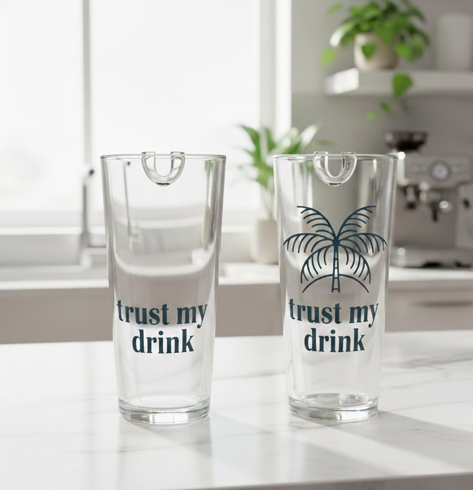

On n'a pas rendu la détection plus compliquée — on l'a rendue invisible. La bandelette est dans le verre, l'activation est dans le geste, le résultat est dans la couleur.

La bandelette est logée dans un rail interne, invisible depuis l'extérieur. Le verre reste propre, réutilisable, et rien ne sort. Vous le tenez comme n'importe quel verre.
Quand vous inclinez le verre pour boire, la boisson effleure la bandelette. Pas de geste supplémentaire, pas de manipulation, pas de contact avec les doigts. La détection se déclenche exactement au bon moment.
Changement de couleur = ne buvez pas. Pas de changement = c'est bon. Le résultat est visible en moins de 10 secondes, même dans la pénombre d'une boîte. Simple. Immédiat. Sans ambiguïté.
Trust My Drink cible les substances les plus fréquemment utilisées dans les cas de soumission chimique en France :